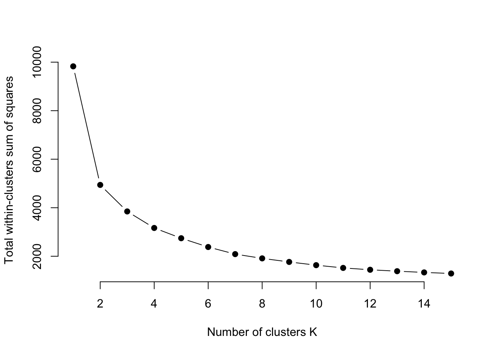
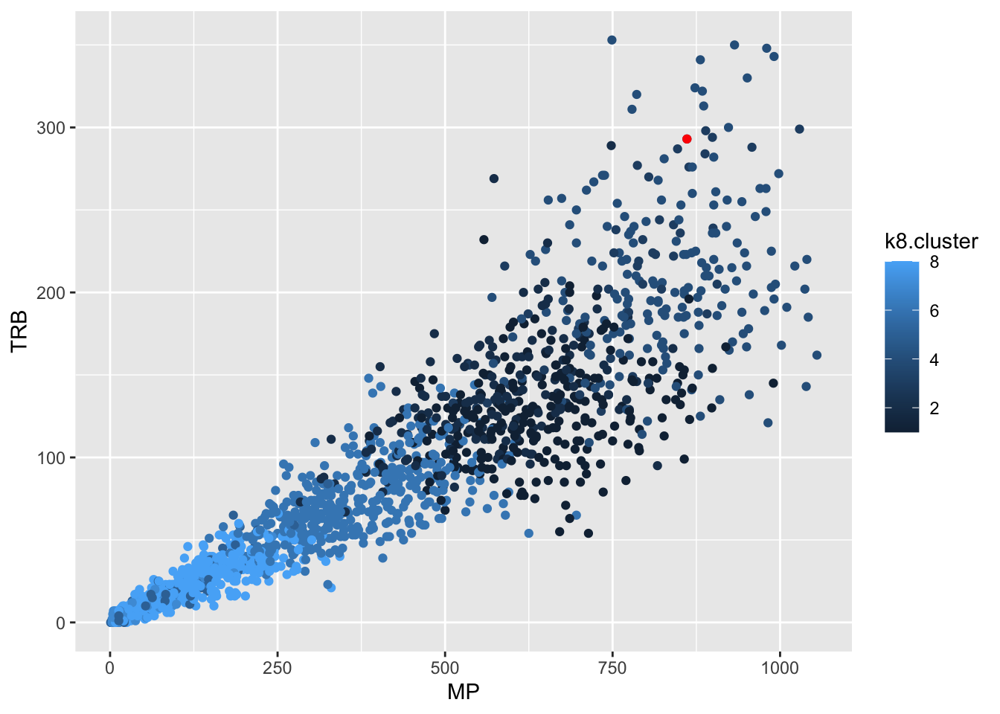
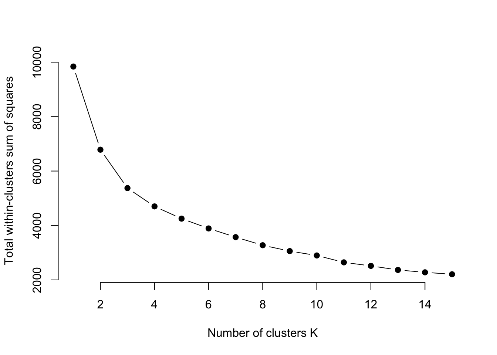

library(tidyverse)
library(cluster)
set.seed(1234)13 Clustering
One common effort in sports is to classify teams and players – who are this players peers? What teams are like this one? Who should we compare a player to? Truth is, most sports commentators use nothing more sophisticated that looking at a couple of stats or use the “eye test” to say a player is like this or that.
There’s better ways.
In this chapter, we’re going to use a method that sounds advanced but it really quite simple called k-means clustering. It’s based on the concept of the k-nearest neighbor algorithm. You’re probably already scared. Don’t be.
Imagine two dots on a scatterplot. If you took a ruler out and measured the distance between those dots, you’d know how far apart they are. In math, that’s called the Euclidean distance. It’s just the space between them in numbers. Where k-nearest neighbor comes in, you have lots of dots and you want measure the distance between all of them. What does k-means clustering do? It lumps them into groups based on the average distance between them. Players who are good on offense but bad on defense are over here, good offense good defense are over here. And using the Euclidean distance between them, we can decide who is in and who is out of those groups.
For this exercise, I want to look at Jalen Smith, who played two seasons at Maryland before decamping for the NBA. Had he stayed, he could have been among the all-time Terp greats. So who does Jalen Smith compare to?
To answer this, we’ll use k-means clustering.
First thing we do is load some libraries and set a seed, so if we run this repeatedly, our random numbers are generated from the same base. If you don’t have the cluster library, just add it on the console with install.packages("cluster")
I’ve gone and scraped stats for every player in that season.
For this walkthrough:
Now load that data.
players <- read_csv("data/players20.csv")Rows: 5452 Columns: 57
── Column specification ────────────────────────────────────────────────────────
Delimiter: ","
chr (8): Team, Player, Class, Pos, Height, Hometown, High School, Summary
dbl (49): #, Weight, Rk.x, G, GS, MP, FG, FGA, FG%, 2P, 2PA, 2P%, 3P, 3PA, 3...
ℹ Use `spec()` to retrieve the full column specification for this data.
ℹ Specify the column types or set `show_col_types = FALSE` to quiet this message.To cluster this data properly, we have some work to do.
First, it won’t do to have players who haven’t played, so we can use filter to find anyone with greater than 0 minutes played. Next, Jalen Smith is a forward, so let’s just look at forwards. Third, we want to limit the data to things that make sense to look at for Smith – things like shooting, rebounds, blocks, turnovers and points.
playersselected <- players %>%
filter(MP>0) %>% filter(Pos == "F") %>%
select(Player, Team, Pos, MP, `FG%`, TRB, BLK, TOV, PTS) %>%
na.omit() Now, k-means clustering doesn’t work as well with data that can be on different scales. So comparing a percentage to a count metric – shooting percentage to points – would create chaos because shooting percentages are a fraction of 1 and points, depending on when they are in the season, could be quite large. So we have to scale each metric – put them on a similar basis using the distance from the max value as our guide. Also, k-means clustering won’t work with text data, so we need to create a dataframe that’s just the numbers, but scaled. We can do that with another select, and using mutate_all with the scale function. The na.omit() means get rid of any blanks, because they too will cause errors.
playersscaled <- playersselected %>%
select(MP, `FG%`, TRB, BLK, TOV, PTS) %>%
mutate_all(scale) %>%
na.omit()With k-means clustering, we decide how many clusters we want. Most often, researchers will try a handful of different cluster numbers and see what works. But there are methods for finding the optimal number. One method is called the Elbow method. One implementation of this, borrowed from the University of Cincinnati’s Business Analytics program, does this quite nicely with a graph that will help you decide for yourself.
All you need to do in this code is change out the data frame – playersscaled in this case – and run it.
# function to compute total within-cluster sum of square
wss <- function(k) {
kmeans(playersscaled, k, nstart = 10 )$tot.withinss
}
# Compute and plot wss for k = 1 to k = 15
k.values <- 1:15
# extract wss for 2-15 clusters
wss_values <- map_dbl(k.values, wss)
plot(k.values, wss_values,
type="b", pch = 19, frame = FALSE,
xlab="Number of clusters K",
ylab="Total within-clusters sum of squares")
The Elbow method – so named because you’re looking for the “elbow” where the line flattens out. In this case, it looks like a K of 8 is ideal. So let’s try that. We’re going to use the kmeans function, saving it to an object called k5. We just need to tell it our dataframe name, how many centers (k) we want, and we’ll use a sensible default for how many different configurations to try.
k8 <- kmeans(playersscaled, centers = 8, nstart = 25)Let’s look at what we get.
k8K-means clustering with 8 clusters of sizes 263, 161, 44, 188, 90, 392, 103, 398
Cluster means:
MP FG% TRB BLK TOV PTS
1 0.8578410 -0.04802976 0.5296900 -0.1249576 0.8012144 0.6761765
2 0.6114599 0.43888680 0.6835198 1.1508637 0.3303347 0.3928252
3 1.3194410 0.57964043 1.7227785 3.8227947 0.9327078 1.2461273
4 1.5250965 0.34205779 1.6794426 0.7714193 1.7162316 1.8637568
5 -1.1562229 2.05173492 -1.0114963 -0.6981471 -1.0058198 -0.9280719
6 -0.1008779 0.08931655 -0.1790649 -0.1316087 -0.1660950 -0.2669699
7 -1.2907157 -2.43019592 -1.1384508 -0.8183787 -1.1343745 -1.0786200
8 -0.9856353 -0.29446744 -0.9105630 -0.6706989 -0.8922622 -0.8719061
Clustering vector:
[1] 4 2 6 7 8 4 3 8 8 8 8 8 5 4 4 2 1 8 5 1 8 8 5 7 4 2 6 5 4 2 3 1 6 6 7 7 4
[38] 4 2 4 4 6 8 1 8 8 4 6 8 8 8 4 8 8 1 2 8 8 4 1 6 8 5 4 4 1 6 8 2 2 6 8 5 5
[75] 3 4 1 8 5 8 5 4 1 6 6 8 8 8 1 6 2 5 6 6 6 5 4 3 8 7 1 6 8 8 5 5 7 4 1 6 5
[112] 4 4 1 6 8 5 4 1 6 8 8 1 2 6 6 8 7 1 6 7 4 1 1 8 3 2 7 4 1 8 4 1 8 8 4 1 8
[149] 2 5 6 2 6 6 8 1 1 2 6 8 4 8 8 8 2 6 6 6 8 7 2 8 2 1 2 6 1 4 1 6 8 8 8 1 1
[186] 1 8 8 7 4 6 6 8 6 8 4 6 1 6 6 6 1 2 1 6 8 8 3 1 8 6 2 6 6 6 8 4 6 8 8 8 7
[223] 1 2 6 8 2 2 2 6 4 1 8 8 1 1 6 6 8 7 4 4 2 2 8 4 3 8 7 4 1 7 8 4 6 6 6 6 4
[260] 2 6 6 6 1 2 8 7 4 6 6 8 3 1 1 8 1 2 6 8 8 7 1 2 2 8 4 4 1 6 8 4 4 1 6 5 4
[297] 8 8 5 1 1 2 8 8 3 4 1 8 4 1 6 6 7 4 1 6 6 8 2 6 8 8 4 6 5 8 7 4 4 8 8 4 2
[334] 6 6 6 6 7 7 7 6 5 5 8 8 4 1 1 6 5 7 8 4 4 5 8 8 1 6 8 7 6 6 5 8 2 8 7 4 1
[371] 1 2 8 1 2 6 8 7 6 1 6 8 4 1 2 1 8 1 4 6 8 5 8 5 4 4 6 6 8 4 1 6 8 3 1 1 6
[408] 4 6 6 8 6 8 3 6 6 8 1 2 1 6 8 1 2 5 4 3 8 8 1 6 6 8 8 5 1 6 8 8 1 1 8 8 1
[445] 6 8 4 1 6 8 8 5 7 1 8 6 8 7 3 6 6 6 6 8 2 6 8 4 1 1 6 7 4 6 1 8 2 6 6 8 8
[482] 6 6 8 5 5 8 4 1 6 7 1 1 6 8 5 4 2 8 8 1 2 8 2 6 8 7 4 3 8 4 6 8 4 3 6 6 8
[519] 6 2 5 1 6 6 6 4 3 6 8 8 4 4 6 6 6 1 2 6 8 5 4 4 2 6 6 4 3 6 7 7 4 2 6 8 8
[556] 8 4 1 2 2 8 8 8 7 4 4 8 4 3 1 5 1 1 6 6 6 4 2 5 8 1 2 6 8 4 8 8 8 7 4 1 6
[593] 8 8 8 2 2 8 7 7 4 1 6 5 8 6 6 5 4 2 1 8 4 3 6 6 8 8 4 1 6 6 8 7 2 6 8 4 4
[630] 5 8 8 8 7 2 2 8 1 1 3 6 8 7 3 1 2 6 8 7 4 2 6 8 7 4 2 1 8 8 1 8 7 7 8 1 4
[667] 6 6 8 8 2 6 8 1 3 5 8 4 4 6 2 6 1 1 1 8 4 2 8 4 1 6 6 8 4 1 1 8 8 6 2 2 6
[704] 7 1 4 2 6 7 1 1 5 3 2 1 8 6 6 8 8 4 4 2 6 8 4 3 1 8 8 3 1 6 6 8 8 1 2 6 8
[741] 8 6 2 6 6 8 7 4 6 6 6 6 8 8 1 6 6 8 1 6 6 6 8 5 5 1 1 4 1 8 7 1 2 2 5 4 1
[778] 8 8 8 1 2 8 6 8 7 4 3 8 8 8 8 5 7 1 6 8 8 6 6 6 6 8 7 2 6 6 6 6 2 5 6 8 8
[815] 3 1 1 6 2 6 8 5 1 6 6 6 8 8 7 2 6 6 5 2 2 2 6 8 8 4 2 6 6 3 6 8 8 1 6 8 7
[852] 2 6 8 8 3 6 5 8 5 8 5 1 6 1 8 8 4 1 1 8 8 8 2 2 6 6 6 2 6 2 6 8 7 1 6 8 2
[889] 2 1 5 4 1 1 2 6 8 8 1 1 6 6 7 4 1 1 2 1 6 8 1 5 8 7 4 4 2 8 5 2 6 6 6 5 5
[926] 4 4 1 5 1 6 6 6 4 1 2 6 8 8 1 1 2 6 7 5 3 6 7 1 7 1 8 8 8 4 1 6 6 8 4 6 8
[963] 4 6 8 8 4 2 6 6 6 6 8 4 6 6 8 3 2 6 6 8 7 4 2 6 8 7 7 1 1 6 8 6 8 6 6 7 1
[1000] 1 6 6 6 8 7 1 2 1 6 8 1 1 8 4 6 8 3 8 7 4 6 8 8 8 7 1 2 6 8 8 2 6 8 8 8 8
[1037] 2 2 1 6 4 6 8 8 8 3 1 1 6 6 8 8 7 2 1 8 8 1 6 8 5 8 1 6 6 7 4 2 6 6 6 8 1
[1074] 1 6 1 2 1 6 5 2 6 8 1 6 2 8 6 6 6 8 8 4 1 2 6 6 4 8 6 8 1 2 1 6 6 7 7 4 6
[1111] 8 5 2 1 2 6 6 5 5 8 5 4 4 8 5 8 4 6 6 2 6 8 7 1 6 7 7 4 2 8 4 4 2 2 6 5 4
[1148] 1 6 8 8 8 4 3 6 6 7 5 2 6 6 8 5 1 2 6 8 8 8 8 8 7 1 6 6 8 6 8 7 3 6 6 6 4
[1185] 2 3 4 4 2 8 4 4 8 8 6 2 2 8 4 4 2 8 2 2 1 8 8 4 3 2 8 2 1 8 6 1 1 1 6 6 5
[1222] 5 2 1 7 8 4 4 8 8 1 1 2 6 6 2 1 6 1 6 6 7 4 6 8 8 4 6 6 8 4 1 1 6 5 2 2 8
[1259] 6 6 6 8 4 1 8 7 4 5 2 1 6 6 6 8 4 1 6 1 8 8 7 3 6 8 5 1 3 6 6 6 8 3 4 1 1
[1296] 1 6 6 6 8 4 2 2 8 8 1 6 8 4 2 5 2 6 6 8 7 4 6 8 8 8 8 1 2 7 1 1 8 6 8 6 8
[1333] 7 8 8 4 3 6 2 1 2 6 8 5 1 1 8 8 7 8 4 1 6 1 2 6 4 4 6 4 6 5 6 8 4 1 6 8 8
[1370] 7 4 6 5 8 7 1 6 6 6 8 6 7 4 6 1 1 6 6 8 8 8 1 1 6 8 2 6 5 1 1 8 5 1 4 6 8
[1407] 5 4 8 7 1 2 6 6 7 1 6 8 1 1 1 6 8 6 6 6 6 7 1 1 6 8 8 8 4 1 2 8 1 1 6 8 4
[1444] 1 1 2 8 1 8 4 5 8 4 1 6 6 8 7 1 1 6 6 8 7 4 1 1 6 8 2 6 6 6 6 8 8 1 4 1 1
[1481] 8 8 7 1 4 6 5 8 1 6 2 8 7 2 3 2 6 8 8 4 2 6 6 8 7 1 1 6 8 1 2 6 6 4 6 6 1
[1518] 1 4 1 8 5 7 4 6 8 4 1 4 6 8 4 6 3 6 8 4 1 6 8 6 8 5 4 1 2 5 7 4 1 8 8 8 7
[1555] 7 2 6 8 8 7 1 1 6 8 2 1 1 1 6 8 8 8 7 3 4 6 5 4 6 6 8 4 6 6 2 8 8 7 1 1 2
[1592] 6 1 1 6 6 5 1 2 6 8 8 2 6 6 6 5 7 2 1 6 6 1 8 1 1 1 6 8 6 6 6 8 8 8 4 1 8
[1629] 6 5 4 1 8 5 8 1 2 6 6
Within cluster sum of squares by cluster:
[1] 310.41877 241.01243 137.33736 443.93894 116.53203 384.86933 56.08423
[8] 221.54760
(between_SS / total_SS = 80.5 %)
Available components:
[1] "cluster" "centers" "totss" "withinss" "tot.withinss"
[6] "betweenss" "size" "iter" "ifault" Interpreting this output, the very first thing you need to know is that the cluster numbers are meaningless. They aren’t ranks. They aren’t anything. After you have taken that on board, look at the cluster sizes at the top. Clusters 3 and 4 are pretty large compared to others. That’s notable. Then we can look at the cluster means. For reference, 0 is going to be average. So group 1 is below average on minutes played. Groups 8 is slightly above, group 5 is well above.
So which group is Jalen Smith in? Well, first we have to put our data back together again. In K8, there is a list of cluster assignments in the same order we put them in, but recall we have no names. So we need to re-combine them with our original data. We can do that with the following:
playercluster <- data.frame(playersselected, k8$cluster) Now we have a dataframe called playercluster that has our player names and what cluster they are in. The fastest way to find Jalen Smith is to double click on the playercluster table in the environment and use the search in the top right of the table. Because this is based on some random selections of points to start the groupings, these may change from person to person, but Smith is in Group 2 in my data.
We now have a dataset and can plot it like anything else. Let’s get Cam Mack and then plot him against the rest of college basketball on rebounds versus minutes played.
cm <- playercluster %>% filter(Player == "Jalen Smith")
cm Player Team Pos MP FG. TRB BLK TOV PTS k8.cluster
1 Jalen Smith Maryland Terrapins F 861 0.534 293 64 49 425 3So Jalen’s in cluster 2, which if you look at our clusters, puts him in the cluster with all above average metrics. What does that look like? We know Jalen was a rebounding machine, so where do group 2 people grade out on rebounds?
ggplot() +
geom_point(data=playercluster, aes(x=MP, y=TRB, color=k8.cluster)) +
geom_point(data=cm, aes(x=MP, y=TRB), color="red")
Not bad, not bad. But who are Jalen Smith’s peers? If we look at the numbers in Group 2, there’s 495 of them. So let’s limit them to just Big Ten guards. Unfortunately, my scraper didn’t quite work and in the place of Conference is the coach’s name. So I’m going to have to do this the hard way and make a list of Big Ten teams and filter on that. Then I’ll sort by minutes played.
big10 <- c("Nebraska Cornhuskers", "Iowa Hawkeyes", "Minnesota Golden Gophers", "Illinois Fighting Illini", "Northwestern Wildcats", "Wisconsin Badgers", "Indiana Hoosiers", "Purdue Boilermakers", "Ohio State Buckeyes", "Michigan Wolverines", "Michigan State Spartans", "Penn State Nittany Lions", "Rutgers Scarlet Knights", "Maryland Terrapins")
playercluster %>% filter(k8.cluster == 2) %>% filter(Team %in% big10) %>% arrange(desc(MP)) Player Team Pos MP FG. TRB BLK TOV PTS
1 Kyle Young Ohio State Buckeyes F 573 0.585 144 13 14 188
2 Brandon Johns Jr Michigan Wolverines F 546 0.492 111 20 21 169
3 Ryan Kriener Iowa Hawkeyes F 514 0.559 118 20 35 220
4 E.J. Liddell Ohio State Buckeyes F 441 0.443 98 28 26 175
5 Marcus Bingham Michigan State Spartans F 330 0.409 111 40 14 107
k8.cluster
1 2
2 2
3 2
4 2
5 2So there are the 4 forwards most like Jalen Smith in the Big Ten. Are they the best forwards in the conference?
13.1 Advanced metrics
How much does this change if we change the metrics? I used pretty standard box score metrics above. What if we did it using Player Efficiency Rating, True Shooting Percentage, Point Production, Assist Percentage, Win Shares Per 40 Minutes and Box Plus Minus (you can get definitions of all of them by hovering over the stats on Nebraksa’s stats page).
We’ll repeat the process. Filter out players who don’t play, players with stats missing, and just focus on those stats listed above.
playersadvanced <- players %>%
filter(MP>0) %>%
filter(Pos == "F") %>%
select(Player, Team, Pos, PER, `TS%`, PProd, `AST%`, `WS/40`, BPM) %>%
na.omit() Now to scale them.
playersadvscaled <- playersadvanced %>%
select(PER, `TS%`, PProd, `AST%`, `WS/40`, BPM) %>%
mutate_all(scale) %>%
na.omit()Let’s find the optimal number of clusters.
# function to compute total within-cluster sum of square
wss <- function(k) {
kmeans(playersadvscaled, k, nstart = 10 )$tot.withinss
}
# Compute and plot wss for k = 1 to k = 15
k.values <- 1:15
# extract wss for 2-15 clusters
wss_values <- map_dbl(k.values, wss)Warning: did not converge in 10 iterations
Warning: did not converge in 10 iterationsplot(k.values, wss_values,
type="b", pch = 19, frame = FALSE,
xlab="Number of clusters K",
ylab="Total within-clusters sum of squares")
Looks like 4.
advk4 <- kmeans(playersadvscaled, centers = 4, nstart = 25)What do we have here?
advk4K-means clustering with 4 clusters of sizes 627, 320, 612, 82
Cluster means:
PER TS% PProd AST% WS/40 BPM
1 0.3328142 0.5094144 -0.0942388 -0.09932351 0.3805037 0.3628638
2 0.9655878 0.4538599 1.5112893 0.82146770 0.8477533 0.8427975
3 -0.5374881 -0.3986254 -0.5452426 -0.22446363 -0.5022825 -0.4844985
4 -2.3014614 -2.6912101 -1.1077608 -0.77100101 -2.4690239 -2.4475330
Clustering vector:
[1] 2 1 1 3 3 2 2 3 1 3 3 1 1 2 2 1 1 3 1 3 3 3 1 4 2 1 1 1 2 2 2 2 2 1 3 4 2
[38] 2 1 2 2 3 1 2 1 3 2 3 3 3 3 2 1 3 1 1 1 3 2 2 1 1 1 2 2 1 1 3 1 1 1 3 1 2
[75] 2 2 1 1 1 3 1 2 1 1 3 3 3 3 3 1 1 1 3 3 1 3 2 2 3 4 1 1 3 1 1 1 4 2 1 1 1
[112] 2 2 2 1 3 1 2 2 1 3 3 2 3 3 1 3 3 1 1 4 2 1 1 3 1 1 4 2 2 1 2 1 3 3 2 2 3
[149] 3 1 2 1 3 3 3 2 1 1 1 1 2 1 3 3 2 1 3 3 1 3 2 3 1 1 2 1 1 1 1 1 3 3 3 1 3
[186] 3 1 3 4 2 1 1 1 3 3 2 1 3 1 3 1 2 1 3 1 1 3 2 1 3 3 1 1 1 3 4 2 1 3 3 3 4
[223] 3 1 3 3 1 2 1 1 2 3 3 3 3 3 1 3 3 4 2 2 1 1 1 2 1 1 4 2 3 4 3 2 2 1 1 3 2
[260] 1 1 1 1 2 1 3 4 2 3 3 3 2 1 3 3 2 1 1 3 3 4 1 1 1 1 2 2 3 1 3 2 2 1 3 1 2
[297] 3 3 1 3 3 3 3 3 2 2 1 3 2 1 3 3 4 2 1 3 3 3 1 1 3 1 2 1 1 3 4 2 2 1 3 2 1
[334] 1 1 1 1 4 4 3 3 1 1 1 4 2 1 1 3 1 4 3 2 2 1 3 3 2 3 3 3 2 3 2 3 1 1 3 2 2
[371] 1 1 3 3 3 3 3 3 1 1 1 3 3 3 1 3 1 2 2 1 1 1 3 3 2 2 1 3 1 2 1 1 3 2 3 3 3
[408] 2 1 1 1 1 3 2 1 3 3 3 3 3 3 3 1 1 1 2 1 3 3 3 1 1 3 3 1 2 1 3 3 1 3 3 3 2
[445] 1 3 2 1 1 3 3 2 4 2 1 1 3 4 2 3 1 1 3 3 1 1 3 2 1 1 3 4 2 1 3 3 1 1 1 3 3
[482] 1 1 1 1 1 3 2 1 3 4 2 3 1 3 1 1 1 3 3 1 1 3 1 1 3 3 2 2 1 2 1 3 2 2 1 1 3
[519] 3 1 1 1 1 3 1 2 2 3 1 3 2 2 1 3 1 1 1 3 3 1 2 2 1 1 3 1 2 1 1 4 4 2 1 3 1
[556] 3 1 2 2 2 1 1 3 3 4 2 2 3 2 2 1 1 2 1 3 3 3 2 3 3 3 2 1 1 4 2 1 1 3 4 1 3
[593] 1 3 3 3 2 1 1 3 4 2 2 1 1 3 1 1 1 2 1 1 3 2 2 1 3 1 2 2 2 3 3 3 3 2 1 1 2
[630] 2 1 3 3 3 4 2 1 3 2 1 1 3 3 4 2 1 1 1 1 3 2 1 3 1 4 2 3 1 3 3 1 3 3 3 4 1
[667] 1 1 1 3 3 1 3 1 3 2 1 3 2 1 1 1 3 1 3 1 1 2 1 3 2 2 3 1 3 2 2 1 3 3 1 1 1
[704] 1 4 2 1 1 3 3 3 3 1 2 3 3 1 3 3 3 3 2 2 1 1 1 1 1 3 3 3 1 1 3 3 3 3 1 3 1
[741] 3 3 1 1 3 1 3 4 2 3 1 3 3 3 1 3 1 3 3 1 1 1 1 3 1 1 2 1 1 1 1 4 2 2 1 1 2
[778] 1 3 3 3 3 3 3 3 3 4 2 1 3 1 1 1 1 4 1 1 1 3 3 3 3 1 3 3 3 1 3 3 1 1 1 1 3
[815] 1 2 2 1 1 1 1 1 1 1 1 3 1 1 3 4 1 3 3 1 2 2 3 1 3 3 2 1 1 3 2 1 1 3 1 3 3
[852] 4 2 3 3 3 2 1 1 3 1 1 1 3 3 3 3 3 2 2 3 3 3 3 1 1 1 1 1 1 1 1 1 3 2 1 3 3
[889] 1 1 3 1 2 1 3 3 3 3 3 1 2 1 3 3 2 1 1 1 3 3 3 1 3 1 4 2 2 2 1 3 2 1 1 3 1
[926] 3 2 2 2 1 2 3 3 3 2 3 1 1 1 1 1 3 1 1 4 1 2 1 3 3 4 3 3 3 3 2 2 1 3 1 1 3
[963] 3 2 3 3 3 2 2 1 1 3 1 3 2 3 3 4 2 1 1 3 3 4 2 1 1 1 3 3 3 3 3 1 3 3 2 1 4
[1000] 2 1 3 3 3 1 4 1 1 3 3 1 1 1 3 2 1 3 1 1 4 1 3 3 3 3 4 1 2 3 1 3 2 1 3 3 3
[1037] 3 2 1 1 3 2 1 3 3 3 2 1 1 3 1 3 3 4 1 3 3 3 1 3 1 1 3 1 3 3 3 1 1 3 3 3 1
[1074] 1 3 3 1 2 3 3 1 1 3 3 2 1 1 3 3 1 3 1 3 2 3 1 3 3 2 3 1 3 3 1 3 3 3 4 4 2
[1111] 1 3 1 2 1 1 1 1 1 1 3 1 2 3 1 1 3 2 3 1 1 1 1 4 3 3 3 3 2 1 3 2 2 2 2 2 1
[1148] 2 1 1 3 3 1 2 2 1 3 4 2 1 1 1 3 1 2 1 1 3 3 1 3 3 3 1 1 1 3 1 3 4 2 3 1 3
[1185] 2 1 1 2 2 2 1 2 2 3 3 1 1 3 3 2 2 1 1 2 1 1 1 1 2 2 1 3 1 3 3 1 2 1 1 3 1
[1222] 1 1 3 1 4 4 2 2 3 3 1 3 1 3 3 2 3 1 1 1 3 3 2 1 3 3 2 1 3 3 2 2 1 3 1 2 1
[1259] 3 2 1 3 1 2 2 1 3 2 3 2 1 1 1 1 1 2 3 3 1 3 3 3 2 1 3 1 2 1 3 3 3 3 2 1 1
[1296] 3 1 3 3 3 3 2 1 1 3 3 3 3 3 2 2 1 2 1 1 3 3 2 3 3 2 3 3 2 2 3 2 2 3 3 3 3
[1333] 3 4 4 3 1 1 1 1 1 1 3 3 1 2 1 1 3 2 3 2 1 1 3 1 3 2 2 1 2 3 1 3 3 2 3 3 3
[1370] 3 4 2 1 1 3 4 3 1 3 3 1 3 4 2 1 3 3 3 3 3 3 3 2 1 1 4 1 1 3 2 3 4 2 2 1 1
[1407] 3 1 2 3 4 3 3 3 3 4 3 3 3 1 1 1 1 3 3 3 3 2 4 3 1 3 3 1 3 2 2 1 3 2 1 1 3
[1444] 2 2 1 1 1 1 3 2 1 1 2 3 3 3 3 4 2 2 1 3 3 4 2 1 1 3 3 1 3 3 3 3 3 3 2 2 1
[1481] 2 1 3 3 2 2 3 1 3 1 1 1 3 3 1 1 2 3 3 3 2 1 3 1 3 4 2 2 1 3 2 2 3 1 2 1 3
[1518] 1 1 2 3 3 3 4 4 2 1 3 2 1 2 3 3 2 1 2 3 1 2 1 1 1 3 3 1 2 1 1 1 4 2 1 1 3
[1555] 3 4 4 1 1 3 1 4 2 1 1 4 3 1 3 3 3 3 3 3 4 2 2 1 1 2 1 1 1 2 1 3 1 1 3 3 2
[1592] 1 1 3 1 1 1 1 1 2 3 1 1 3 1 3 3 3 3 4 1 2 1 3 3 3 1 3 3 3 4 3 3 3 3 4 1 2
[1629] 1 1 3 1 2 2 1 1 1 1 2 1 3
Within cluster sum of squares by cluster:
[1] 1427.2032 1442.9566 1161.4081 669.2421
(between_SS / total_SS = 52.2 %)
Available components:
[1] "cluster" "centers" "totss" "withinss" "tot.withinss"
[6] "betweenss" "size" "iter" "ifault" Looks like this time, cluster 1 is all below average and cluster 5 is all above. Which cluster is Jalen Smith in?
playeradvcluster <- data.frame(playersadvanced, advk4$cluster) jsadv <- playeradvcluster %>% filter(Player == "Jalen Smith")
jsadv Player Team Pos PER TS. PProd AST. WS.40 BPM
1 Jalen Smith Maryland Terrapins F 28.9 0.623 392 5.2 0.252 11.8
advk4.cluster
1 2Cluster 4 on my dataset. So in this season, we can say he’s in a big group of players who are all above average on these advanced metrics.
Now who are his Big Ten peers?
playeradvcluster %>%
filter(advk4.cluster == 4) %>%
filter(Team %in% big10) %>%
arrange(desc(PProd)) Player Team Pos PER TS. PProd AST. WS.40 BPM
1 Harrison Hookfin Ohio State Buckeyes F -8.3 0.2 3 0 -0.206 -15.0
2 Samad Qawi Wisconsin Badgers F -17.5 0.0 1 0 -0.206 -14.6
3 Nathan Childress Indiana Hoosiers F -6.0 0.0 1 0 -0.200 -27.3
advk4.cluster
1 4
2 4
3 4Sorting on Points Produced, Cam Mack is third out of the 15 forwards in the Big Ten who land in Cluster 4. Seems advanced metrics rate Jalen Smith pretty highly.